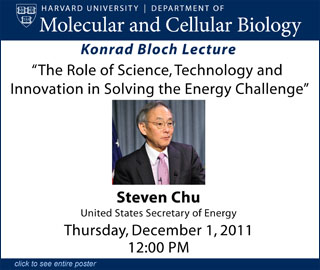

News Archives : 2011 : Steven Chu Presents 2011 Bloch Lecture
by Xiaowei Zhuang
November 21, 2011
This year’s Bloch Lecture will be given by Steven Chu, the United States Secretary of Energy. The title of his lecture will be “The Role of Science, Technology and Innovation in solving the Energy Challenge”. Prior to becoming the DOE secretary, Steve was the director of the Lawrence Berkeley National Laboratory, and a professor of Physics and Professor of Molecular and Cellular Biology at UC Berkeley. His research interests span atomic physics, polymer physics, biophysics, and most recently energy science.
Born to a family of over-achievers, Steve started as the black sheep among his siblings. His elder brother has both a MD and a PhD, and his younger brother has a PhD and a law degree. Steve merely earned a single PhD. It was not until he won the Nobel Prize that he proved he also belonged in the Chu family.
It was in 1997, that the Nobel Committee awarded Steve Chu the Nobel Prize in Physics, citing his seminal contributions in the “development of methods to cool and trap atoms with laser light”. At Bell labs and later at Stanford University, Steve and his coworkers developed optical and magneto-optic traps that can cool and trap atoms. They used these techniques to construct atomic fountains and atom interferometers for extremely high precision measurements. For these studies, he shared the Nobel Prize in Physics with Claude Cohen Tannouchdji and William Phillips.
In addition to atomic physics, Steve also initiated the field of single-molecule polymer physics, where he used optical tweezers and video microscopy to study the dynamics of individual polymer molecules, using DNA as the model system. His work provided long awaited experimental proof for some of the most important hypotheses and theories in polymer dynamics. More recently, he extended his single-molecule efforts to more biologically oriented problems, using optical tweezers and single-molecule fluorescence to study RNA/protein folding, transcription, translation, vesicle fusion and transport. He is a pioneer and a leader in the rapidly burgeoning field of single-molecule biophysics and biology.
After becoming the director of the Lawrence Berkeley National Laboratory in 2004, Steve acquired a new interest in energy-related science and technology. He began to work tirelessly on problems related to climate change and clean energy, finding solutions, and bringing these problems to the attention of the public, all of which led directly to his current position as the 12th Secretary of the US Department of Energy.
Steve Chu received his BS in Physics and BA in Mathematics from University of Rochester, and his PhD in Physics from University of California at Berkeley. He was a member of the technical staff and then a department head at Bell Labs, a Professor of Physics and Applied Physics at Stanford University, a Professor of Physics and of Molecular and Cellular Biology at the University of California at Berkeley, and the Director of the Lawrence Berkeley National Laboratory. In addition to the Nobel Prize, Steve has won numerous other awards, including the King Faisal International Prize in Science. He is an elected member of the National Academy of Sciences and of the American Academy of Arts and Sciences, and a foreign member of the Chinese Academy of Sciences and Korean Academy of Science and Technology.
by Jim Henle
Konrad E. Bloch was an outstanding scientist who helped shape the discipline of biochemistry in its formative years. One of the founders of biochemical studies at Harvard, he was part of the pioneer generation that included George Wald, Paul Doty, John Edsall and Frank Westheimer. Best known for his studies of cholesterol, he was awarded the Nobel Prize in Medicine or Physiology in 1964 (shared with Feodor Lynen) for investigations in the mechanism and regulation of cholesterol and fatty acid metabolism. Especially noteworthy were the studies on the biological synthesis of the molecule and, according to the Nobel Prize website, “on various aspects of terpene and sterol biogenesis…enzymatic formation of unsaturated fatty acids and...in various aspects of biochemical evolution.”
Arriving at Harvard from the University of Chicago in 1954, he was appointed Higgins Professor of Biochemistry, a position he held until his retirement in 1982. He was part of the core group at Harvard that founded the Committee on Higher Degrees in Biochemistry. With the somewhat later arrival of James Watson, Matthew Meselson, Walter Gilbert, Mark Ptashne and Guido Guidotti, Harvard had achieved a remarkably dynamic and productive core group in biochemistry and molecular biology, of which Dr. Bloch was a signal part. The late Dean Jeremy Knowles described him as “a marvelously perceptive biochemist and a wise, generous and cultivated man who forged the connections between chemistry and biochemistry. He was one of that distinguished line of European biochemists whose deep understanding of metabolism laid the chemical foundations of today’s biology.” [quoted in Harvard Gazette, Oct. 19, 2000]
Dr. Bloch was born in Neisse, then part of Germany, in 1912; he was racially excluded from his studies at Munich in 1934 upon the Nazi advent to power. His subsequent odyssey began in Switzerland, and he was spared a likely fatal return to Germany by the intervention of John Anderson, a Yale biochemist, who helped him with a visa to the US. In America, his studies resumed at Columbia; after a brief stay in Chicago, he came to Harvard.
His work was widely recognized; in addition to the Nobel, he received the US National Medal of Science, and many other awards and honorary degrees. In addition to his scientific output, he wrote intriguing popularizing works such as “Blondes in Venetian Paintings, the Nine-banded Armadillo, and Other Essays in Biochemistry”. He died in 2000, at the age of 88. In 1986, the annual Konrad Bloch lecture was inaugurated in his honor.
The author wishes to express his gratitude to Prof. Guido Guidotti for reviewing the text for accuracy.
The Bloch lecture, sponsored by Pfizer, honors Harvard faculty member and Nobel-prize recipient Konrad Bloch (1912-2000), a pioneer in the field of cholesterol and lipid metabolism.
[November 21st, 2011]
{kind=link}